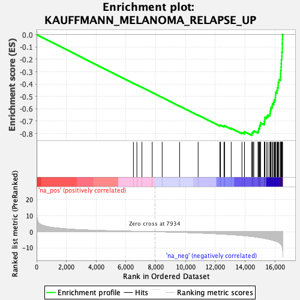

| | | Dataset | DE_genes2 |
| Phenotype | NoPhenotypeAvailable |
| Upregulated in class | na_neg |
| GeneSet | KAUFFMANN_MELANOMA_RELAPSE_UP |
| Enrichment Score (ES) | -0.8149231 |
| Normalized Enrichment Score (NES) | -2.4427023 |
| Nominal p-value | 0.0 |
| FDR q-value | 0.0 |
| FWER p-Value | 0.0 |
Table: GSEA Results Summary

Fig 1: Enrichment plot: KAUFFMANN_MELANOMA_RELAPSE_UP
Profile of the Running ES Score & Positions of GeneSet Members on the Rank Ordered List
| PROBE | GENE SYMBOL | GENE_TITLE | RANK IN GENE LIST | RANK METRIC SCORE | RUNNING ES | CORE ENRICHMENT | | 1 | XRCC5 | | | 6499 | 0.246 | -0.3936 | No |
| 2 | LAMTOR5 | | | 6731 | 0.196 | -0.4069 | No |
| 3 | TDP1 | | | 7070 | 0.140 | -0.4270 | No |
| 4 | OGG1 | | | 7760 | 0.023 | -0.4687 | No |
| 5 | PMS2P3 | | | 8430 | -0.081 | -0.5090 | No |
| 6 | PPIA | | | 9598 | -0.339 | -0.5786 | No |
| 7 | POLE4 | | | 10843 | -0.740 | -0.6514 | No |
| 8 | HUS1 | | | 12299 | -1.374 | -0.7347 | No |
| 9 | RPA3 | | | 12343 | -1.397 | -0.7322 | No |
| 10 | RFC2 | | | 12578 | -1.523 | -0.7408 | No |
| 11 | FANCG | | | 12622 | -1.544 | -0.7377 | No |
| 12 | CTBP2 | | | 13062 | -1.807 | -0.7578 | No |
| 13 | MCM3 | | | 13783 | -2.315 | -0.7930 | No |
| 14 | MCM7 | | | 13952 | -2.457 | -0.7941 | No |
| 15 | RFC5 | | | 13956 | -2.460 | -0.7853 | No |
| 16 | SUMO1 | | | 14445 | -2.929 | -0.8042 | Yes |
| 17 | PTTG1 | | | 14464 | -2.952 | -0.7944 | Yes |
| 18 | GTF2H2 | | | 14529 | -3.022 | -0.7872 | Yes |
| 19 | CHAF1A | | | 14579 | -3.085 | -0.7789 | Yes |
| 20 | MSH6 | | | 14863 | -3.443 | -0.7834 | Yes |
| 21 | PCNA | | | 14896 | -3.501 | -0.7725 | Yes |
| 22 | MCM4 | | | 14906 | -3.510 | -0.7601 | Yes |
| 23 | FANCA | | | 14968 | -3.594 | -0.7507 | Yes |
| 24 | MSH2 | | | 14972 | -3.606 | -0.7376 | Yes |
| 25 | CCNH | | | 15015 | -3.664 | -0.7267 | Yes |
| 26 | GMNN | | | 15032 | -3.688 | -0.7141 | Yes |
| 27 | RAD51 | | | 15283 | -4.088 | -0.7143 | Yes |
| 28 | RAD17 | | | 15291 | -4.101 | -0.6997 | Yes |
| 29 | CHEK2 | | | 15311 | -4.128 | -0.6857 | Yes |
| 30 | ORC4 | | | 15318 | -4.149 | -0.6708 | Yes |
| 31 | RAD54L | | | 15435 | -4.365 | -0.6618 | Yes |
| 32 | RAD18 | | | 15531 | -4.556 | -0.6508 | Yes |
| 33 | EME1 | | | 15663 | -4.840 | -0.6410 | Yes |
| 34 | FANCD2 | | | 15673 | -4.860 | -0.6237 | Yes |
| 35 | RRM2 | | | 15702 | -4.911 | -0.6074 | Yes |
| 36 | BLM | | | 15728 | -4.957 | -0.5907 | Yes |
| 37 | RFC4 | | | 15807 | -5.149 | -0.5766 | Yes |
| 38 | MCM6 | | | 15829 | -5.218 | -0.5587 | Yes |
| 39 | ORC6 | | | 15923 | -5.453 | -0.5443 | Yes |
| 40 | CHEK1 | | | 15965 | -5.552 | -0.5264 | Yes |
| 41 | TERF1 | | | 16025 | -5.742 | -0.5089 | Yes |
| 42 | DCLRE1A | | | 16034 | -5.780 | -0.4882 | Yes |
| 43 | MAD2L1 | | | 16043 | -5.805 | -0.4673 | Yes |
| 44 | GTF2H3 | | | 16136 | -6.070 | -0.4506 | Yes |
| 45 | TFAM | | | 16168 | -6.208 | -0.4297 | Yes |
| 46 | GINS2 | | | 16213 | -6.392 | -0.4089 | Yes |
| 47 | RAD51AP1 | | | 16221 | -6.439 | -0.3857 | Yes |
| 48 | CDC45 | | | 16272 | -6.693 | -0.3642 | Yes |
| 49 | BRIP1 | | | 16369 | -7.368 | -0.3429 | Yes |
| 50 | CDC6 | | | 16375 | -7.439 | -0.3159 | Yes |
| 51 | EXO1 | | | 16387 | -7.570 | -0.2888 | Yes |
| 52 | BRCA1 | | | 16413 | -7.892 | -0.2614 | Yes |
| 53 | SMC4 | | | 16421 | -7.981 | -0.2325 | Yes |
| 54 | NEIL3 | | | 16430 | -8.045 | -0.2034 | Yes |
| 55 | XRCC2 | | | 16461 | -8.522 | -0.1740 | Yes |
| 56 | SMC2 | | | 16464 | -8.568 | -0.1426 | Yes |
| 57 | POLQ | | | 16490 | -9.648 | -0.1087 | Yes |
| 58 | DEK | | | 16492 | -9.678 | -0.0732 | Yes |
| 59 | TOP2A | | | 16497 | -9.873 | -0.0372 | Yes |
| 60 | CENPF | | | 16507 | -10.688 | 0.0015 | Yes |
Table: GSEA details [plain text format]
Fig 2: KAUFFMANN_MELANOMA_RELAPSE_UP: Random ES distribution
Gene set null distribution of ES for KAUFFMANN_MELANOMA_RELAPSE_UP